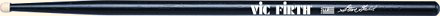
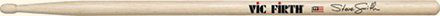
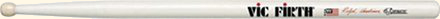
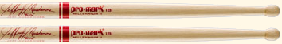
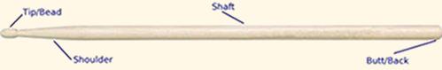

Get the Right Gear for Success!
Start with The Best Drum Sticks, Practice Pad
and Metronome.
Lesson One:
Welcome to Lesson One!
Having the right drum sticks and other practice equipment is essential to developing your technique and world-class drumming skills.
You need three things to get started on the right track:
- The Right Pair of Sticks
- The Right Drum Practice Pad
- A Quality Metronome
In this lesson I'm going to talk you through everything you need to know to get all the right tools!
Drum Sticks
There are endless options for drum sticks. Buying the best thing does not have to be difficult.
Follow these three simple rules:
- Get a quality wood stick.
- Get a stick with a big enough shaft (main body where you hold the stick) to be substantial in your hand.
- Get drum sticks that are balanced and straight.
WARNING: Avoid gimmicks, gismos, flashy colors, and designs. Metal, plastic, and nylon, are NOT the way to go. Some quality wood sticks have a nylon/plastic tip and serve a specific purpose. But for general technique development and playing, go with a wood tip.
Let's talk about some specific models and makes that fit the three guidelines above.
Manufacturers
In my opinion, the top two manufacturers out there are Promark and Vic Firth.
I have had a great experience with everything I have purchased from either of them. They have been around for a long time and make very good, high quality products. They are balanced well and last. You can't go wrong with products made by either one.
Don't get distracted with the endless choices out there. Here are some top models that you can start with.
Models by Vic Firth
When it comes to technique development, the size of the shaft (see "Anatomy of a Drum Stick below) is one of the most important features.
To develop your hands, wrists, fingers, and arms properly. You need a stick that is substantial in your hand.
Vic Firth's "SD2 - Bolero" is a very general stick with a medium-sized shaft and a smaller bead, making it functional on drum set as well as great for technique development on a practice pad.
This is my first recommendation for general technique development and drum set playing.
Many of the top drum set pros around the world have custom models named after them. Vic Firth calls this their "Signature Series."
All the models in this series work very well for drum set playing. Although the shafts are a bit smaller than the SD2, they are still substantial enough for good technique development, and they feel great moving around the drum kit.
I have three favorite models in this "Signature Series" that I have used myself:
SDW - Dave Weckle
SDW - Steve Gadd
SDW - Steve Smith
Drumline and Outdoor/Marching Percussion
If your objective is to become a great rudimental player, I would highly recommend you do all of the technique development in these lessons with full size "3-S" marching snare sticks.
If you are preparing to audition for your high school or college drumline, or even a top drum and bugle corps, this is the best way to go.
Again, I like the products made by Vic Firth. They have many different models in their "Corpsmaster Series."
One of My Favorite is the "Ralph Hardiman" SRH Model. This stick is 17 inches in length and has a great feel.
SDW - Ralph Hardiman
I know players who really like other models in the Corpsmaster series such as: Murray Gusseck(SMG), Tom Float(STF), Thom Hannum(STH), and Jeff Queen(SJQ). I have tried them all and any of these sticks will work great as well.
My Top Recommendations for full-size rudimental sticks are made by promark. I use these extensively and really like their weight and feel. Either of these sticks will serve you very well.
TXDC17W - Scott Johnson
TXDC18IW - Jeff Ausdemore
How and Where to Buy Drum Sticks
You can buy all of the models I have recommended above online. Here are some helpful links to connect you to top dealers:
Promark Marching - Outdoor Percussion
SRH Ralph Hardiman and Corpsmaster Series
Steve Weiss Music and Lone Star Percussion are two of my favorite reliable online dealers. They know their stuff, have been around for a long time, and you can talk to a live person anytime you want.
Local Music Stores:
Most local music stores are a viable resource, but be very cautious that you don't end up buying junk out of the bargain barrel.
These are usually poorly balanced, and about as straight as a tree branch. Roll them on a table top, to make sure they are straight.
Another great test is to hold each stick up to your ear and tap it with your finger nail. Listen to the pitch or tone. This reveals the wood density. If both sticks are not close to the same pitch or tone, they will not be well balanced in weight.
If your local music store does not carry any of the above Promark or Vic Firth models, then make sure they are at least 16” long, and are of the “5A” or “5B” class. Stay away from the smaller models such as “7A” in the beginning.
Anatomy of a Drumstick
Each of these four parts effect the feel, response and over all sound of a drum stick. As you get more experience, you will develop your own preferences and tastes.
Start off with some of the recommendations I have made above, then explore and experiment with different products that meet the needs of the music you are playing.
In Conclusion
Get a great pair of sticks! You are going to spend hours and hours with these puppies in your hands and you want to not only enjoy it, but be using drum sticks that will help you develop to your greatest potential!
 Randall Beach, Creator of DrummingExpert.com
Randall Beach, Creator of DrummingExpert.com